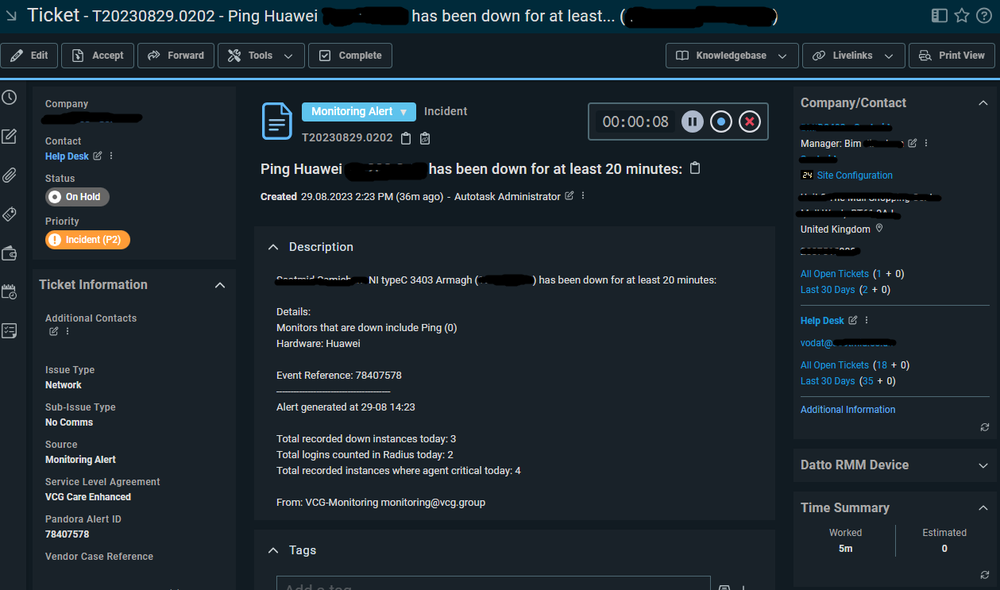

Router Down
In this task, a site's network is offline due to its router being offline. This is a retail site so the router being down only allows them to do cash sales. This will affect the business heavily and their potential sales and profits. The router is a layer 3 part and handles the routing of data inside the network and the data coming in and out of the network, it sends the data outside of the network via the default gateway. Due to the router being offline, data cannot leave the network and if it is fully offline, data cannot be moved locally or within the LAN. For example, the layer 2 switches won't be able to communicate with each other, leading to tills, PCs, tablets and more being offline too.
My task involves identifying the cause or causes of the router being down, troubleshooting it and finally bringing it back online making the store able to trade once again. The task may sound simple and be able to be typed in one sentence, but the process requires more steps.
When a router goes offline it will be alerted to us via our monitoring system called Pandora. For a router, it needs to be offline for 20 minutes before it alerts us, this changes based on what it is, for example, a lease line or head office going offline is alerted after 2 minutes and 4G routers are 60 minutes. When a router has been down for 20 minutes it sends an email alert to our Outlook inbox when then automatically raises the email as a ticket to our ticketing system, Autotask. An example of our ticket is below. This ticket reference for this case was T20230829.0202.
The official SLA for response time to a ticket like this is 1 hour and 8 hours for a resolution if it doesn’t need external teams, like Openreach or an engineer visit. These SLAs are important as it helps the customer understand the time we need to complete something and when it’s expected to be back up.
The next step is to ping the router as it could have come online since the ticket was raised or something else could have brought it back up and online. I use the PING command with the switch -t which makes the ping continuous. The ICMP packet will confirm whether the router is down.

The continuous ping above shows that it has not been able to contact the router and has lost 100% of the packets it sent, meaning the router is still offline.
The next step is to run a line test. A line test is testing both the PSTN(if using one) and ADSL/FTTC/FTTP line all the way to the site from the provider. The reason we test the lines is that if either of the lines are having issues, this can impact the site down the line. If the line had a fault that could be the probable reason to why the router is down. For testing the PSTN we go through a portal called Abillity.
First, we log in to Abillity, then we select WLR3 Tools. The you put the CLI into he box and confirm the postcode. You are then able to run a test.


In this case, the test passed, so we moved on to testing the ADSL part of the line. If this failed and had a fault we would raise this to Openreach and if the site pays for a 4G drop-in service, provide a temporary router. To test the DSL part of the line, this site uses TTB as the provider and can be completed by doing the following.

First, we log in and go to supportal, when we are there, we put in the CLI. We can then check if the line is in sync or not. In this case the line isn’t in sync so you will have to run a line test, but if it is in sync, then we can do a port reset. A port reset drops the port in the exchange and forces the router to reauthenticate, this can solve some issues with the router as if it is in sync but not authenticating you will get no internet. Since the line isn’t in sync we move to the next step.
Next, we select the service LLU and put in the CLI, this will populate the information about the line and allow you to run a line test, called a TAM test here. LLU stands for Local loop unbundling, and this allows for companies other than BT to give out broadband using Openreach lines. This means that TTB is using ORs lines to provide broadband to us.

So, then we select TAM test and issue and it will show the result once complete. Once ran, it will show a result like below.

Since both line tests passed this means that the fault isn’t with the line but with the equipment on site. To test on-site equipment there are many steps, but we always do initial checks first as there isn’t much point in sending an engineer when we can bring the router back online over the phone if it is switched off for example. So, we do the initial checks over the phone to save time and make the work more efficient. When we call the site, we will check the lights that are at the front of the device as this will give us an indicator of what is going on here, for example, this site Had the PWR, SYS and VDSL lights on, but we also expect the PPP light on (Point to point protocol). Due to the PPP light not being on this will indicate an issue with the DSL cable as we send PPP over the line, but it’s getting a signal from the line as the VDSL light is on. So first we unplug the RJ11 cable from the router and plug it back in, when then do the same for the side that is connected to the filter into the master socket on the wall. This is due to over time it can get loose or tugged on and come loose. Usually, this can bring it back online and we run a continuous ping anyway just to see if it helps but it’s good practice to reboot the kit too as it gets a fresh connection and startup. We ask the site to unplug the power, wait 10-15 seconds then plug it back in. After this, we monitor the site to make sure comms return and the site is back online. In this case, the site starts to get successful pings as it comes back online showing that the router is getting a connection and is online. Shown below is the successful ping response.

I sent 47 ICMP packets and it was 100% successful. The reason we send so many is to make sure that the site is successfully stable. If the site had been down for an extended period, we may continue to monitor for a period of time to make sure nothing goes wrong with the site as it has been down for a while, when closing we would write something similar to the below.

When closing the case we need to give proof it has been stable. The above photo shows our radius logs. This is a tool we use where we have a file with all the logins for the sites for PPP authentication. Every time a router authenticates it uses the logins from the USERS file on the radius server and connects to the internet using the PPP details stored. Every time a site successfully authenticates with the line and USERS file makes a log which is then stored on the radius. This allows us to see how many times a router authenticates with us allowing us to check if the connection is stable, if it is authenticating a lot then it shows that the connection isn’t stable. And it would need to be looked at. As you can see in the red circle it hasn’t needed to authenticate for the last week which means it has held that same connection without issue. The other piece of proof we provide is a standard ping response to show it’s currently online. If it has been down for a short period of time then we would use a closing message like below.

This is obviously less detailed in showing that it has been stable as it isn’t referencing the radius logs, but it does explain what we did to bring it back online and shows a ping response as proof that it is online and currently online. Doing an in-depth stability check isn’t always required if the network went down briefly and was stable before as it could be as simple as it being accidentally unplugged. We still explain what we did to bring it online, but we don’t explain that we are going to monitor it as it isn’t required. This keeps the network security at a high level as the firmware versions we use are tested and have minimal flaws. The newest version is usually good but can have unforeseen bugs and flaws so it's important to use a version with a good knowledge base behind it. Overall, this was resolved in the first response which was 35 mins after the ticket was raised. This fulfils both the first response SLA of 1 hour and resolution SLA of 8 Hours.